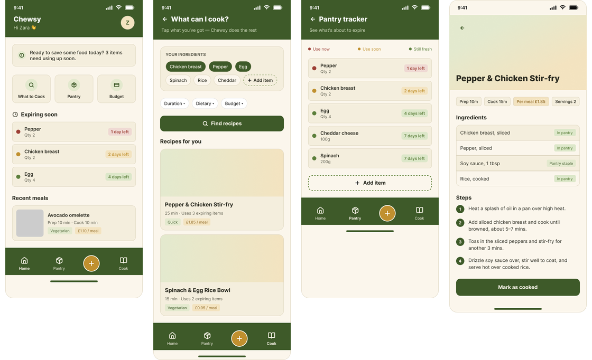
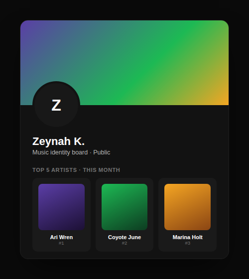

About me
- User research
- Usability testing
- Interaction design
- Figma prototyping
- React Native
- Swift & SwiftUI
I'm Zeynah Khan, a UX designer and developer based in London.
I'm passionate about designing for the people mainstream products overlook, and I love working where research, design and code meet. With a background in both art and computer science, I've taken projects from user surveys and competitor analysis through to Figma prototypes and working apps built in React Native and Swift. I'm happiest when research shapes every decision, and I'm always looking to learn, test and improve.
I graduated from Kingston University in 2026 with a First-class Honours degree in Computer Science, where a year-long module in user-centred design showed me exactly what I wanted to do. I'm now completing the Google UX Design Certificate and seeking junior roles in UX and product design.
My projects
Research-led projects across health, food and music, from first research to working code.

Hormone+
A health app for people underserved by fertility-focused FemTech: gentle check-ins, accessible learning and clear, non-predictive insights. Researched, designed in Figma and built in React Native.

Chewsy
A meal planner helping students cut food waste and spending by cooking from what's already in the fridge, not a shopping list.

Spotify Redesign
Rethinking the homepage by grouping content clearly, surfacing personalisation and adding pin and sort controls grounded in real user complaints.